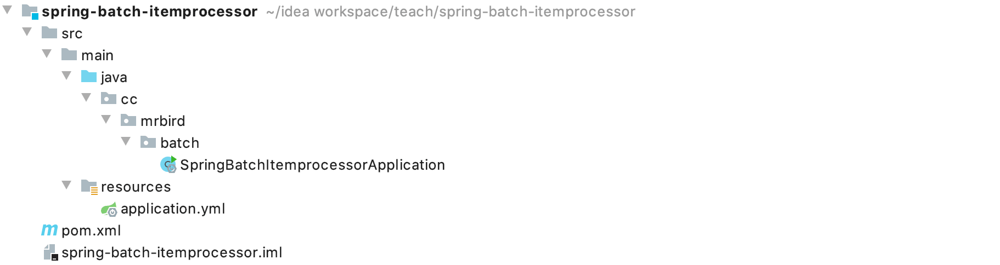

在Spring Batch中，ItemReader接口用于读取数据，ItemWriter接口用于输出数据。除此之外，我们可以通过ItemProcessor接口实现数据的处理，包括：数据校验，数据过滤和数据转换等。数据处理的时机发生于ItemReader读取数据之后，ItemWriter输出数据之前。本节记录下Spring Batch中ItemProcessor的使用。
框架搭建
新建一个Spring Boot项目，版本为2.2.4.RELEASE，artifactId为spring-batch-itemprocessor，项目结构如下图所示：

剩下的数据库层的准备，项目配置，依赖引入和Spring Batch入门文章中的框架搭建步骤一致，这里就不再赘述。
在介绍Spring Batch ItemProcessor之前，我们先准备个简单的数据读取源。在cc.mrbird.batch包下新建entity包，然后在该包下新建TestData实体类：
1 | public class TestData { |
接着在cc.mrbird.batch包下新建reader包，然后在该包下创建ItemReaderConfigure：
1 |
|
上面注册了一个ItemReader类型的Bean，后续都用它作为读取数据的来源。
格式校验
ItemProcessor的实现类ValidatingItemProcessor可以用于数据格式校验。举个例子，在cc.mrbird.batch包下新建job包，然后在该包下新建ValidatingItemProcessorDemo：
1 |
|
通过ValidatingItemProcessor我们对ItemReader读取的每一条数据进行校验，如果field3的值为空串的话，则抛出ValidationException("field3的值不合法")异常。ItemProcessor通过步骤创建工厂的processor()设置。
启动项目，控制台日志的打印如下：
1 | 2020-03-09 14:18:47.186 INFO 17967 --- [ main] o.s.b.c.l.support.SimpleJobLauncher : Job: [SimpleJob: [name=validatingItemProcessorJob]] launched with the following parameters: [{}] |
可以看到任务处理过程中抛出了预期异常，关于任务处理中如何处理异常，可以参考后续的文章。
除了使用这种方式外，我们还可以使用BeanValidatingItemProcessor校验使用JSR-303注解标注的实体类。比如，在TestData类的field3属性上添加@NotBlank注解：
1 | public class TestData { |
使用该注解需要在pom中添加spring-boot-starter-validation依赖：
1 | <dependency> |
然后在job包下新建BeanValidatingItemProcessorDemo：
1 |
|
启动项目后，控制台日志打印如下：
1 | 2020-03-09 14:31:14.813 INFO 18100 --- [ main] o.s.b.c.l.support.SimpleJobLauncher : Job: [SimpleJob: [name=beanValidatingItemProcessorJob]] launched with the following parameters: [{}] |
可以看到，不符合规则的数据已经被排除了。如果不开启过滤beanValidatingItemProcessor.setFilter(false)，那么在遇到不符合注解校验规则的数据，将抛出如下异常：
1 | org.springframework.batch.item.validator.ValidationException: Validation failed for TestData{id=3, field1='31', field2='32', field3=''}: |
数据过滤
通过自定义ItemProcessor的实现类，我们也可以简单地实现数据过滤。在cc.mrbird.batch包下新建processor包，然后在该包下新建TestDataFilterItemProcessor：
1 |
|
TestDataFilterItemProcessor实现了ItemProcessor的process()方法，在该方法内编写具体的校验逻辑，上面代码判断TestData的field3是否为空串，是的话返回null（返回null会过滤掉这条数据）。
接着在job包下新建TestDataFilterItemProcessorDemo：
1 |
|
启动项目，控制台日志打印如下：
1 | 2020-03-09 15:03:30.932 INFO 18690 --- [ main] o.s.b.c.l.support.SimpleJobLauncher : Job: [SimpleJob: [name=testDataFilterItemProcessorJob]] launched with the following parameters: [{}] |
数据转换
在processor包下新建一个ItemProcessor实现类TestDataTransformItemPorcessor：
1 |
|
在job包下新建TestDataTransformItemPorcessorDemo：
1 |
|
启动项目，控制台日志打印如下：
1 | 2020-03-09 15:08:55.628 INFO 18775 --- [ main] o.s.b.c.l.support.SimpleJobLauncher : Job: [SimpleJob: [name=testDataTransformItemPorcessorJob]] launched with the following parameters: [{}] |
聚合处理
在创建Step的时候，除了制定一个ItemProcess外，我们可以通过CompositeItemProcessor聚合多个processor处理过程。
在job包下新建CompositeItemProcessorDemo：
1 |
|
上面代码中，我们通过CompositeItemProcessor聚合了前面定义的连个processor：TestDataFilterItemProcessor和TestDataTransformItemPorcessor。
启动项目，控制台日志打印如下：
1 | 2020-03-09 15:21:24.960 INFO 18882 --- [ main] o.s.b.c.l.support.SimpleJobLauncher : Job: [SimpleJob: [name=compositeItemProcessorJob]] launched with the following parameters: [{}] |
从结果可以看到，数据不但进行了过滤，还进行了转换（拼接hello）。
本节源码链接：https://github.com/wuyouzhuguli/SpringAll/tree/master/70.spring-batch-itemprocessor。